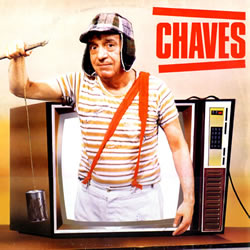
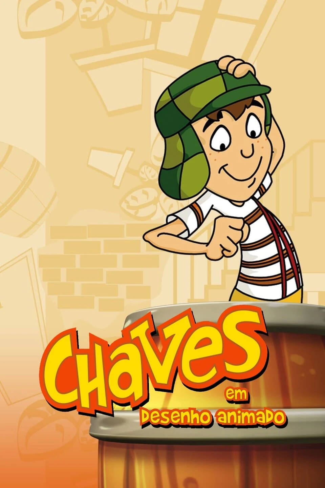
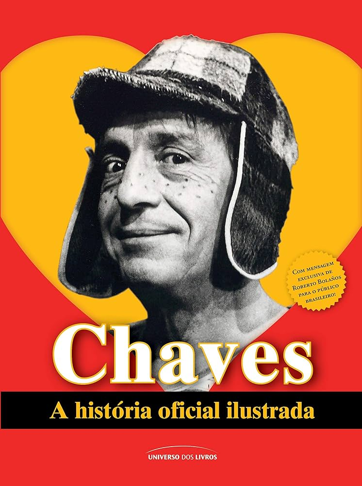
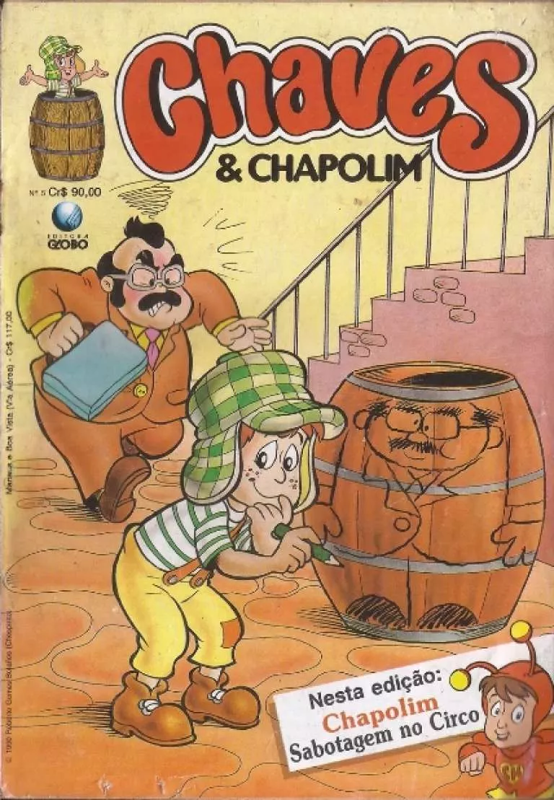

Capas de livros e as séries




Reconhecimentos e prêmios
Chaves Live Action
Prêmio El Heraldo de México
Considerado o Oscar do entretenimento mexicano. A série e o elenco foram premiados diversas vezes na década de 70, validando o sucesso iniciado em 1971.
Chaves em animação
Oscar de dublagem-br
A Herbert Richers foi premiada no Prêmio Yamato pela excelente redublagem, mantendo a essência e a nostalgia da versão clássica para as novas gerações.